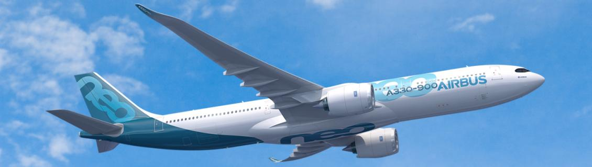
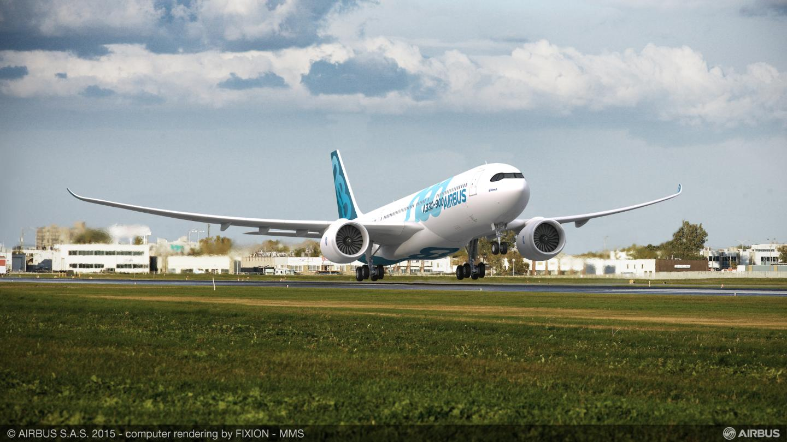
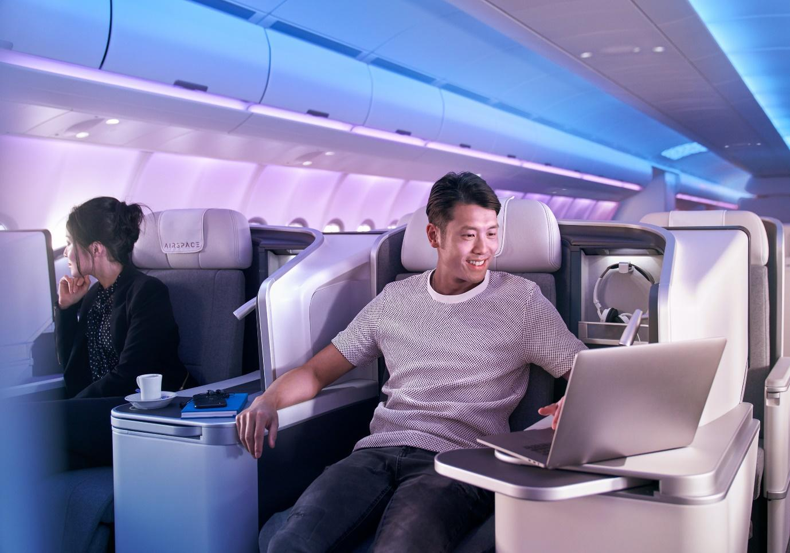

Umum

Sebagai anggota terbesar Keluarga A330neo, A330-900 mempertahankan panjang badan
pesawat dari varian A330-300 Airbus untuk menampung antara 260 dan 300 kursi dalam tata letak tiga
kelas yang khas, atau hingga 460 di kelas ekonomi. Ini adalah platform serbaguna yang memberikan
kinerja yang sangat efisien untuk maskapai
penerbangan, dari segmen jarak pendek hingga rute jarak jauh dengan jarak hingga 7.200nm.

Peningkatan utama termasuk mesin Rolls-Royce Trent 7000 generasi terbaru, bersama
dengan teknologi
baru dan beberapa peningkatan aerodinamis seperti perangkat sayap komposit baru yang memperpanjang
lebar sayap hingga empat meter untuk meningkatkan daya angkat dan mengurangi hambatan.
Spesifikasi
| Ukuran |
| Panjang keseluruhan |
63,66 m |
| Lebar badan pesawat |
5,64 m |
| Rentang sayap |
64 m |
| Tinggi |
16,79 m |
| Kapasitas dan Performa |
| Maksimal bangku |
440 |
| Bangku 3-kelas |
260-300 |
| volume air |
215 m |
| Jangkauan |
13.334 km |
Kabin

Saat Airbus meluncurkan filosofi kabin Airspace baru dengan Keluarga A330neo,
penumpang di A330-900 menikmati lingkungan yang benar-benar inovatif, menginspirasi, dan santai ini.
Tidak ada detail yang terlewatkan untuk menciptakan pengaturan yang nyaman bagi
penumpang yang menawarkan lebih banyak ruang di mana saja dengan kursi yang lebar, kabin yang
terang benderang, dan hiburan dalam penerbangan generasi terbaru, ditambah kemampuan email dan
Wi-Fi.
Memanfaatkan pengembangan kabin mutakhir yang diperkenalkan pada Airbus A350 dan
mencakup empat pilar utama (kenyamanan, suasana, layanan, dan desain), Airspace menawarkan lebih
banyak ruang pribadi, area sambutan yang unik, dan elemen desain khas yang dikembangkan oleh Airbus
untuk mengubah kabin A330-900 menjadi representasi kemewahan sejati.